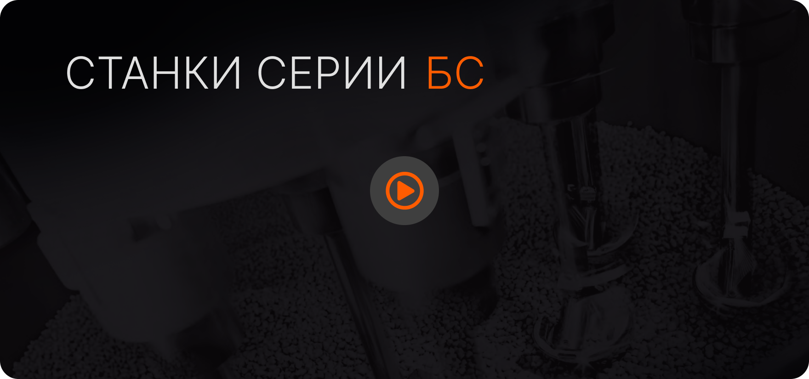

Экономичность и совершенство поверхности для обрабатывающей промышленности
Галтовочные станки серии RG от компании Промтех сочетают в себе высокую производительность, низкий уровень инвестиций капитала и низкий уровень затрат на обработку.Модульная конструкция серии CF Element позволяет каждому станку быть индивидуально адаптированным должным образом к соответствующему применению. Это дает пользователю оптимизированную схему процесса обработки и высокую рентабельность.
Галтовочные станки серии RG от компании Промтех сочетают в себе высокую производительность, низкий уровень инвестиций капитала и низкий уровень затрат на обработку.Модульная конструкция серии CF Element позволяет каждому станку быть индивидуально адаптированным должным образом к соответствующему применению. Это дает пользователю оптимизированную схему процесса обработки и высокую рентабельность.
Область применения
мы предлагаем обработку точностью
Наши установки для дробемётной / дробеструйной обработки обеспечивают практически неограниченные возможности в области обработки поверхности: начиная со снятия заусенцев, удаления окалины, песка и ржавчины, кончая приданием шероховатости, матированием, сатинированием, скруглением кромок и дробеструйным упрочнением. Функциональность и внешний вид поверхности не только являются существенным признаком качества технической продукции, но и определяют в значительной мере её успех на рынке. По этой причине обработка поверхности во многих случаях неизбежна и ее необходимо интегрировать в имеющийся производственный процесс как дополнительный этап в цепочке создания стоимости.
Наши установки для дробемётной / дробеструйной обработки обеспечивают практически неограниченные возможности в области обработки поверхности: начиная со снятия заусенцев, удаления окалины, песка и ржавчины, кончая приданием шероховатости, матированием, сатинированием, скруглением кромок и дробеструйным упрочнением. Функциональность и внешний вид поверхности не только являются существенным признаком качества технической продукции, но и определяют в значительной мере её успех на рынке. По этой причине обработка поверхности во многих случаях неизбежна и ее необходимо интегрировать в имеющийся производственный процесс как дополнительный этап в цепочке создания стоимости.
Удаление заусенец
Наши установки для дробемётной / дробеструйной обработки обеспечивают практически неограниченные возможности
Округление кромок
Наши установки для дробемётной / дробеструйной обработки обеспечивают практически неограниченные возможности
Выглаживание канавок
Наши установки для дробемётной / дробеструйной обработки обеспечивают практически неограниченные возможности
Полирование
Наши установки для дробемётной / дробеструйной обработки обеспечивают практически неограниченные возможности

Ключевые особенности
качественный продукт - качественный результат
Наши установки для дробемётной / дробеструйной обработки обеспечивают практически неограниченные возможности в области обработки поверхности: начиная со снятия заусенцев, удаления окалины, песка и ржавчины, кончая приданием шероховатости, матированием, сатинированием, скруглением кромок и дробеструйным упрочнением. Функциональность и внешний вид поверхности не только являются существенным признаком качества технической продукции, но и определяют в значительной мере её успех на рынке. По этой причине обработка поверхности во многих случаях неизбежна и ее необходимо интегрировать в имеющийся производственный процесс как дополнительный этап в цепочке создания стоимости.
Сенсорная панель
Удобное управление и программирование параметров процесса и глубины погружения (опция)
Двойной привод
При использовании системы двойного привода скорость ротора и заготовок может устанавливаться независимо друг от друга. Это позволяет точно настроить оборудование по требованиям к заготовке
оригинальные компоненты для оригинальных систем
Наши установки для дробемётной / дробеструйной обработки обеспечивают практически неограниченные возможности в области обработки поверхности: начиная со снятия заусенцев, удаления окалины, песка и ржавчины, кончая приданием шероховатости, матированием, сатинированием, скруглением кромок и дробеструйным упрочнением. Функциональность и внешний вид поверхности не только являются существенным признаком качества технической продукции, но и определяют в значительной мере её успех на рынке. По этой причине обработка поверхности во многих случаях неизбежна и ее необходимо интегрировать в имеющийся производственный процесс как дополнительный этап в цепочке создания стоимости.
Независимый приводной угловой держатель
Идеально подходит для финишных операций при малых и средних производственных сериях.
Жесткий держатель
Идеально подходит для финишных операций при малых и средних производственных сериях.
Быстрая смена инструмента
Идеально подходит для финишных операций при малых и средних производственных сериях.
Специальные держатели
Идеально подходит для финишных операций при малых и средних производственных сериях.
Специальные станки
только для вас мы заново открываем себя
Наши установки для дробемётной / дробеструйной обработки обеспечивают практически неограниченные возможности в области обработки поверхности: начиная со снятия заусенцев, удаления окалины, песка и ржавчины, кончая приданием шероховатости, матированием, сатинированием, скруглением кромок и дробеструйным упрочнением. Функциональность и внешний вид поверхности не только являются существенным признаком качества технической продукции, но и определяют в значительной мере её успех на рынке. По этой причине обработка поверхности во многих случаях неизбежна и ее необходимо интегрировать в имеющийся производственный процесс как дополнительный этап в цепочке создания стоимости.
индивидуальные разработки под ваши уникальные требования и по разумной цене
КАЧЕСТВЕННЫЕ РЕШЕНИЯ - ДЛЯ СТАБИЛЬНОГО КАЧЕСТВА
БС - 3/4
Идеально подходит для обработки больших серий при гибком производстве.
БС - 5/6
Решение для финишных операций для крупного промышленного производства.
БС - 7/8
Буксирные станки для шлифования и полирования заготовок во влажной и сухой среде.